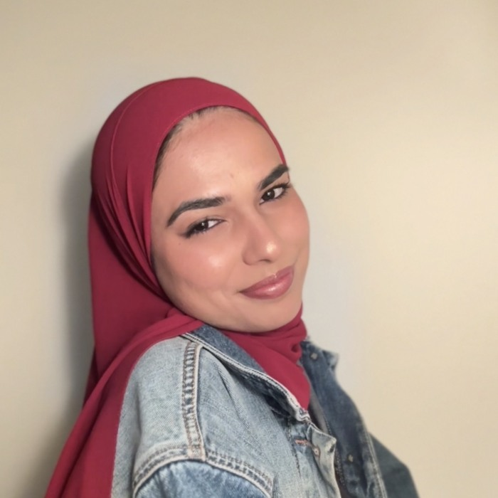
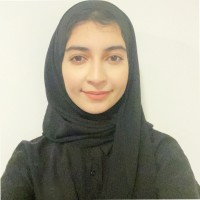
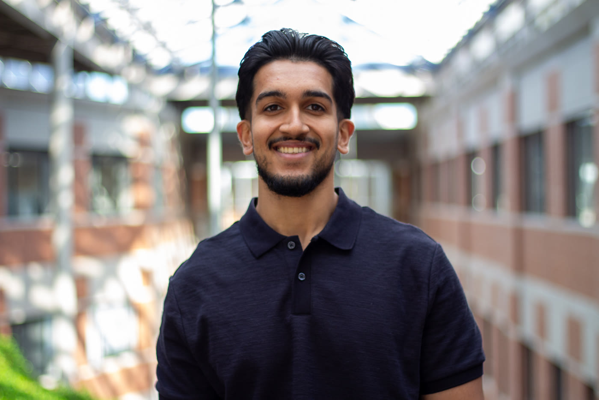
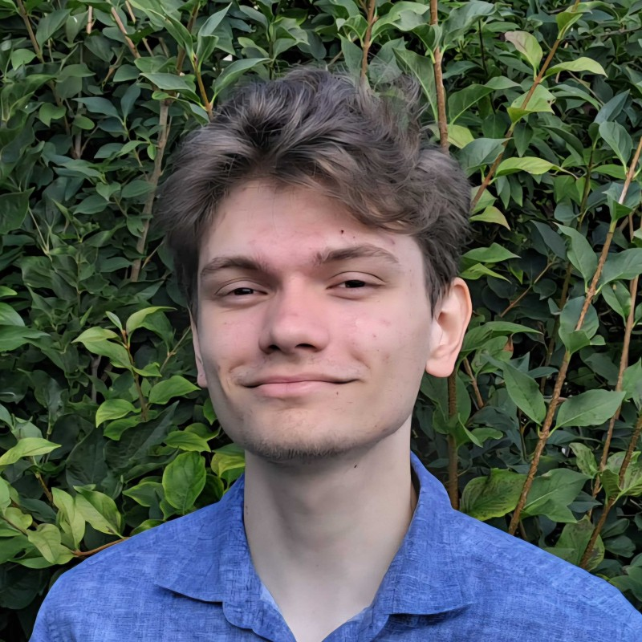
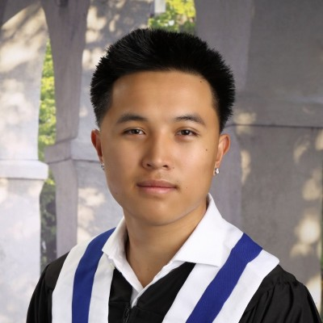
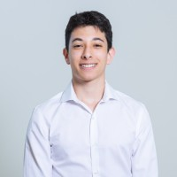
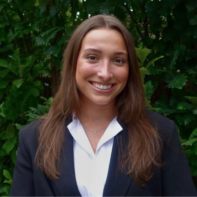
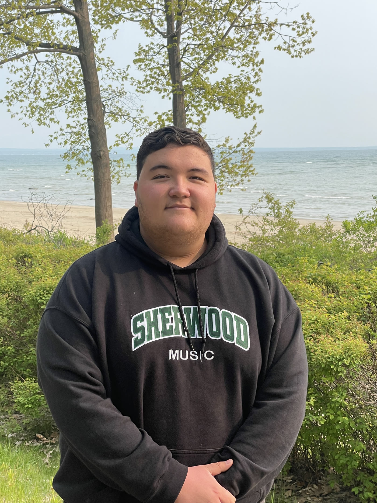

Dr. Stewart J. Russell
Assistant Professor, Molecular & Medical Health Sciences
Department of Health Sciences, Wilfrid Laurier University
Affiliation Scientist, CReATe Fertility Centre
Dr. Stewart J. Russell is an Assistant Professor of Molecular and Medical Health Sciences at Wilfrid Laurier University. He completed his PhD in Biomedical Science at the University of Guelph, where he studied small RNA biology in oocytes and early embryos. Before joining Laurier, he spent nearly a decade directing translational reproductive biology research at CReATe Fertility Centre.
The lab combines reproductive biology, single-cell genomics, multi-omic integration, and clinical fertility research to understand why some embryos progress and others arrest. Current work centers on the Digital Embryo, an integrated atlas and predictive model of human preimplantation development.
Graduate Students
Current graduate trainees drive wet-lab and computational projects across the Digital Embryo and embryo development programs.

Sanaa Ebrahim
MSc Student, Health Sciences, Wilfrid Laurier University
Developing wet-lab workflows for single-cell and multi-omic profiling of human preimplantation embryos, including SS3xpress and scNMT-seq training through the CReATe collaboration.

Arwa Sheheryar
MBINF Student, University of Guelph
Extending transcriptional arrest status scoring across the Digital Embryo backbone to detect molecular signatures of maternal-to-zygotic transition failure.
Undergraduate & Research Trainees
Students and trainees contribute focused analyses that become modular pieces of the broader atlas, modeling, and validation pipeline.

Arsh Verma
USRA Student, Health Sciences, Wilfrid Laurier University
Analyzing transposable element activity and alternative splicing during preimplantation development and embryo arrest.
Deeksha Kumar
USRA Student, Health Sciences, Wilfrid Laurier University
Studying embryo time-lapse imaging and morphokinetics to connect visual developmental dynamics with molecular outcomes.

Dominick Mueller
Co-op Student, Computer Science
Building methylation and multi-omic integration workflows for the Digital Embryo, with emphasis on GLUE-style cross-modal modeling.

Jaylan Tran
Research Student, Health Sciences, Wilfrid Laurier University
Developing variant-calling and embryo-level genetic analysis pipelines that support Digital Embryo metadata and allelic analyses.

Eitan Lenga
Research Student, Health Sciences, Wilfrid Laurier University
Building RNA velocity workflows to infer developmental directionality and identify where embryo arrest diverges from typical progression.
Matthew Shen
Research Student, University of Pennsylvania
Building the Digital Embryo atlas through standardized preprocessing, metadata harmonization, and cross-dataset quality-control workflows.
Alumni
Past lab members and trainees whose work helped shape current projects.

Carly Keshen
MSc Student, University of Toronto IMS
Led transcriptomic meta-analysis work on recurrent implantation failure and endometrial receptivity.
Sheila (Yat Sze) Kwok
PhD, University of Toronto IMS
Studied single-cell transcriptomics of aneuploid embryo development and lineage dynamics.

Eric Chu
Health Sciences, Wilfrid Laurier University
Developed embryo time-lapse annotation and deep-learning workflows.
Emmanuel Arzoumanidis
Health Sciences, Wilfrid Laurier University
Analyzed expressed genetic variants in recurrent implantation failure endometrial RNA-seq data.
Tina Tu-Thu Ngoc Nguyen
Department of Physiology, University of Toronto
Studied endometrial receptivity and implantation failure in clinical and translational settings.
Nicholas Werry
Biomedical Science, University of Guelph
Studied sperm small RNAs and associations with fertility in bovine reproductive biology.